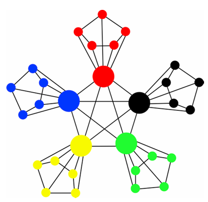

I am an associate professor at Beijing University of Chemical Technology. My research focuses on graph convolutional neural networks, multi-source heterogeneous data mining, and the analysis of network robustness by integrating representation learning with reinforcement learning. My relevant works have been published in journals such as Nature Communications, Social Networks, and Journal of Social Computing. I have also presided over one Postdoctoral Science Foundation General Project and currently serve as an editor for the Journal of Social Computing.
Main Publications
Deep-learning-aided dismantling of interdependent networks. Nature Machine Intelligence.
Weiwei Gu, Chen Yang, Lei Li, Jinqiang Hou, Filippo Radicchi
Identifying the minimal set of nodes whose removal breaks a complex network apart, also referred as the network dismantling problem, is a highly non-trivial task with applications in multiple domains. Whereas network dismantling has been extensively studied over the past decade, research has primarily focused on the optimization problem for single-layer networks, neglecting that many, if not all, real networks display multiple layers of interdependent interactions. In such networks, the optimization problem is fundamentally different as the effect of removing nodes propagates within and across layers in a way that can not be predicted using a single-layer perspective. Here, we propose a dismantling algorithm named MultiDismantler, which leverages multiplex network representation and deep reinforcement learning to optimally dismantle multi-layer interdependent networks. MultiDismantler is trained on small synthetic graphs; when applied to large, either real or synthetic networks, it displays exceptional dismantling performance, clearly outperforming all existing benchmark algorithms. We show that MultiDismantler is effective in guiding strategies for the containment of diseases in social networks characterized by multiple layers of social interactions. Also, we show that MultiDismantler is useful in the design of protocols aimed at delaying the onset of cascading failures in interdependent critical infrastructures.

Principled approach to the selection of the embedding dimension of networks. Nature Communications.
Weiwei Gu, Aditya Tandon, Yong-Yeol Ahn, Filippo Radicchi
Network embedding is a general-purpose machine learning technique that encodes network structure in vector spaces with tunable dimension. Choosing an appropriate embedding dimension – small enough to be efficient and large enough to be effective – is challenging but necessary to generate embeddings applicable to a multitude of tasks. Existing strategies for the selection of the embedding dimension rely on performance maximization in downstream tasks. Here, we propose a principled method such that all structural information of a network is parsimoniously encoded. The method is validated on various embedding algorithms and a large corpus of real-world networks. The embedding dimension selected by our method in real-world networks suggest that efficient encoding in low-dimensional spaces is usually possible.
MWTP: A heterogeneous multiplex representation learning framework for link prediction of weak ties. Neural Networks.
Weiwei Gu, Linbi Lv, Gang Lu, Ruiqi Li
Weak ties that bridge different communities are crucial for preserving global connectivity, enhancing resilience, and maintaining functionality and dynamics of complex networks, However, making accurate link predictions for weak ties remain challenging due to lacking of common neighbors. Most complex systems, such as transportation and social networks, comprise multiple types of interactions, which can be modeled by multiplex networks with each layer representing a different type of connection. Better utilizing information from other layers can mitigate the lack of information for predicting weak ties. Here, we propose a GNN-based representation learning framework for Multiplex Weak Tie Prediction (MWTP). It leverages both an intra-layer and an inter-layer aggregator to effectively learn and fuse information across different layers. The intra-layer one integrates features from multi-order neighbors, and the inter-layer aggregation exploits either logit regression or a more sophisticated semantic voting mechanism to compute nodal-level inter-layer attentions, leading to two variants of our framework, MWTP-logit, and MWTP-semantic. The former one is more efficient in implementation attribute to fewer parameters, while the latter one is slower but has stronger learning capabilities. Extensive experiments demonstrate that our MWTPs outperform eleven popular baselines for predicting both weak ties and all ties across diverse real-world multiplex networks. Additionally, MWTPs achieve good prediction performance with a relatively small training size.
-

Exploring small-world network with an elite-clique: Bringing embeddedness theory into the dynamic evolution of a venture capital network. Social Networks.
Weiwei Gu, Jar-der Luo, Jifan Liu
This paper uses a network dynamics model to explain the formation of a small-world network with an elite-clique. This network is a small-world network with an elite-clique at its center in which elites are also the centers of many small groups. These leaders also act as bridges between different small groups. Network dynamics are an important research topic due to their ability to explain the evolution of network structures. In this paper, a Chinese Venture Capital (VC) network was coded from joint investments between VC firms and then analyzed to uncover its network properties and factors that influence its evolution. We first built a random graph model to control for factors such as network scale, network growth, investment frequency and syndication tendency. Then we added a partner-selection mechanism and used two theories to analyze the formation of network structure: relational embeddedness and structural embeddedness. After that, we ran simulations and compared the three models with the actual Chinese VC network. To do this we computed the elite-clique’s EI index, degree distribution, clustering coefficient distribution and motifs. Results show that adding embeddedness theories significantly improved the network dynamic model’s predictive power, and help us uncover the mechanisms that affect the formation of a small-world industrial network with an elite-clique at its center.
Discovering latent node Information by graph attention network.Scientific reports.
Weiwei Gu, Fei Gao, Xiaodan Lou, Jiang Zhang
In this paper, we propose graph attention based network representation (GANR) which utilizes the graph attention architecture and takes graph structure as the supervised learning information. Compared with node classification based representations, GANR can be used to learn representation for any given graph. GANR is not only capable of learning high quality node representations that achieve a competitive performance on link prediction, network visualization and node classification but it can also extract meaningful attention weights that can be applied in node centrality measuring task. GANR can identify the leading venture capital investors, discover highly cited papers and find the most influential nodes in Susceptible Infected Recovered Model. We conclude that link structures in graphs are not limited on predicting linkage itself, it is capable of revealing latent node information in an unsupervised way once a appropriate learning algorithm, like GANR, is provided.